SPIN Unit
About →
The office

We do research for cities, ministries and development projects. Quantitative and spatial: survey, movement and accessibility data, analysed until it can carry a decision. Every project leaves its method written down and its data with the client — 60 on record here, 41 with reports to read. Enter the website → The platform A platform for collaborative AI planning. SPIN Unit builds and runs it. It turns what a community can imagine into documented evidence of what people agree to want — a mandate a city can defend, not pretty AI pictures. The institution brings the guardrails, residents bring local knowledge, and the platform turns both into options that can be seen, tested and agreed on. Before it we co-designed and ran UrbanistAI, used by cities, agencies and UN country offices across Europe, the Gulf, Asia and Latin America. Visit coplanai.com ↗
Our clients and partners
Since 2012 we have delivered 148 projects for 92 organisations in 27 countries, and run 22 of our own — through the research office, CoPlanAI and UrbanistAI, all billed by SPIN Unit.
SPINUNIT Lab Oy · Mechelininkatu 23, 00100 Helsinki, Finland
SPINUNIT OÜ · Keapa, Patika küla, Rae vald, Harjumaa, Estonia, 75316
spin@spinunit.org